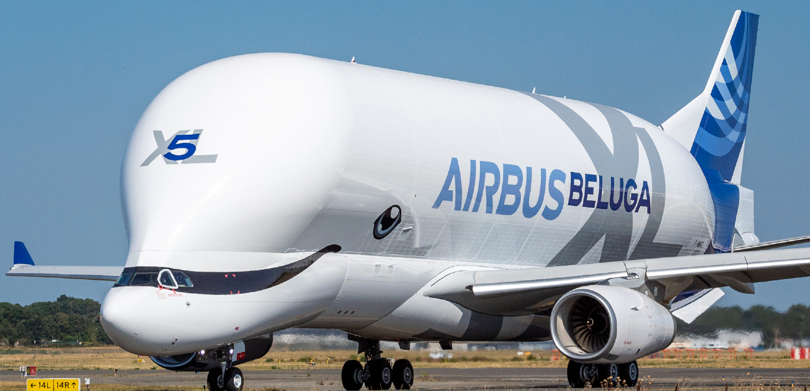

Overview
The Airbus Beluga XL is a large cargo aircraft designed by Airbus to transport oversized and heavy loads, primarily for the Airbus production network. It is based on the Airbus A330-200 and was developed to replace the original Beluga, which was based on the A300. With its distinctive whale-like appearance and oversized cargo hold, the Beluga XL can carry cargo up to 7 meters wide, making it essential for transporting components of aircraft like wings and fuselages. It was introduced to service in 2020.
Specifications
| Feature | Details |
|---|---|
| Manufacturer | Airbus |
| First Flight | July 19, 2018 |
| Service Entry | 2020 |
| Length | 63.1 meters (207 ft 1 in) |
| Wingspan | 60.3 meters (197 ft 11 in) |
| Height | 19.0 meters (62 ft 4 in) |
| Max Takeoff Weight | 227,000 kg (500,000 lbs) |
| Maximum Speed | 800 km/h (497 mph, Mach 0.82) |
| Cruising Speed | 800 km/h (497 mph, Mach 0.82) |
| Range | 4,000 km (2,485 miles) |
| Service Ceiling | 35,000 feet (10,668 meters) |
| Engine Type | Rolls-Royce Trent 700 |
Airlines Using the Airbus Beluga XL
| Airline |
|---|
| Airbus Transport International |
Crash History
The Airbus Beluga XL is a relatively new aircraft with a strong safety record. Since its entry into service in 2020, there have been no major accidents involving the aircraft. Its design, based on the A330-200, incorporates advanced safety features and the reliability associated with Airbus aircraft. As a cargo plane, it is typically used for transporting large parts, and as such, it has fewer operational challenges compared to passenger aircraft.